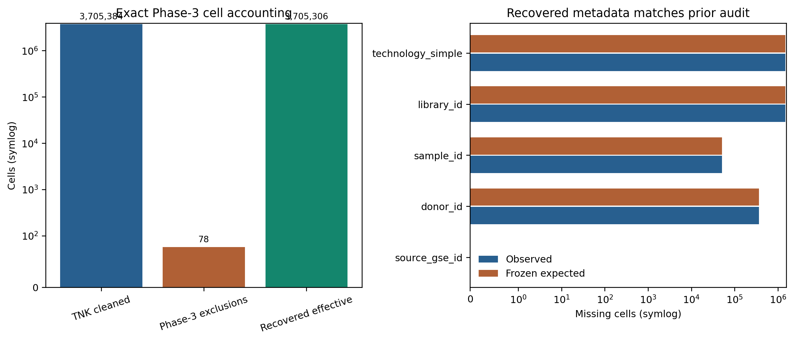

PASS_REVIEW_REQUIRED. The SSD-resident
integrated.h5ad used by the original V4.2 preflight is no
longer present. No exact file copy was found in the project or databank
search. The canonical NFS TNK_cleaned.h5ad can reconstruct
the exact raw-count input needed by the V4.2 sidecar without using old
scVI coordinates or Phase-4 scores.

V4.2 integration consumes raw counts, cell identifiers, source,
donor, sample, library, and technology. It does not consume the missing
object’s old scVI latent representation, Leiden labels, UMAP, Phase-4
scores, or cell-type annotation. TNK_cleaned.h5ad is the
canonical pre-Phase-3 raw-count milestone. Applying the original Phase-3
exclusion manifest removes exactly the 78 cells that distinguish its
3,705,384 rows from the frozen 3,705,306-cell atlas input. The original
harmonized metadata files reproduce the five required metadata columns
and their prior audit counts.
The runner now permits this recovery only when the original integrated path is absent. It requires the exact source, exclusion-manifest, and metadata hashes; the expected raw/effective dimensions; exact exclusion intersection; and this reviewed recovery contract. If the original integrated H5AD reappears, recovery fails closed rather than choosing between two inputs.
| column | observed_missing | expected_missing | observed_unique | expected_unique | exact_match |
|---|---|---|---|---|---|
| source_gse_id | 0 | 0 | 25 | 25 | True |
| donor_id | 366518 | 366518 | 687 | 687 | True |
| sample_id | 51007 | 51007 | 767 | 767 | True |
| library_id | 1483150 | 1483150 | 412 | 412 | True |
| technology_simple | 1483150 | 1483150 | 3 | 3 | True |
| phase3_sanitization_reason | size |
|---|---|
| extreme_library_size | 78 |
| check | status | detail |
|---|---|---|
| original_integrated_h5ad_absent | PASS | /home/tanlikai/databank/publicdata/tools/output_geo_tcell_research/high_speed_temp/Integrated_dataset/integrated.h5ad |
| recovery_source_sha256 | PASS | 04033762f9b1380227f0dabbbdbcd7f0fbe4153e734390b30ef64824e3b181ad |
| phase3_exclusion_manifest_sha256 | PASS | dcc9d7865e0a1712e80b8eb621ab93e5bfc9296ec04b1563195f0aa352f1f097 |
| metadata_source_sha256::0 | PASS | 7fa54bb8ea2a147b84beddcae1f016c4bbb1af4faa9f66c1166e176831eaddac |
| metadata_source_sha256::1 | PASS | e968424576e5859b5d3ecfedf8ef4b772cba71bbdde249a5cc10800f85ea197b |
| recovery_raw_shape | PASS | (3705384, 27413) |
| recovery_sparse_csr | PASS | csr_matrix |
| recovery_unique_axes | PASS | obs_duplicates=0; var_duplicates=0 |
| recovery_raw_count_sample | PASS | {“finite”: true, “integer_like”: true, “maximum”: 1866.0, “minimum”: 1.0, “n_sampled”: 150000, “nonnegative”: true} |
| phase3_exclusion_intersection | PASS | 78 rows |
| effective_cell_count | PASS | 3705306 cells |
| metadata_equivalence::source_gse_id | PASS | missing=0; unique=25 |
| metadata_equivalence::donor_id | PASS | missing=366518; unique=687 |
| metadata_equivalence::sample_id | PASS | missing=51007; unique=767 |
| metadata_equivalence::library_id | PASS | missing=1483150; unique=412 |
| metadata_equivalence::technology_simple | PASS | missing=1483150; unique=3 |
| primary_nk_anchor_recovery | PASS | 21054/21054 |
| primary_nk_anchor_source_count | PASS | 2 sources |
| locked_cohorts_not_opened | PASS | recovery audit reads only current-atlas precursor, exclusion manifest, metadata, and label manifest |
| all_recovery_inputs_unchanged | PASS | 4/4 size/mtime pairs unchanged |
The previous execution approval is intentionally invalidated because
the execution config, runner, core, and physical input contract changed.
Explicit approval of RECOVERY_EXECUTION_APPROVAL.json
authorizes only development-data staging, A100 scVI, repeated
clustering, and pseudo-NK QC. Classifier fitting, threshold selection,
promotion, release fitting, and atlas inference remain separate
unapproved actions.
configs/models/gdtai/v4_2_integration_execution.jsonIntegrated_dataset/tables/gdT_prediction/gdtai_v4_2_recovery_preflight/recovery_checks.csvIntegrated_dataset/logs/gdT_prediction/gdtai_v4_2_recovery_preflight/RECOVERY_EXECUTION_APPROVAL_TEMPLATE.jsongdT_prediction/gdtai_v4_2_recovery_preflight/index.htmlgdT_prediction/gdtai_v4_2_recovery_preflight/gdtai_v4_2_recovery_preflight_report.pdf